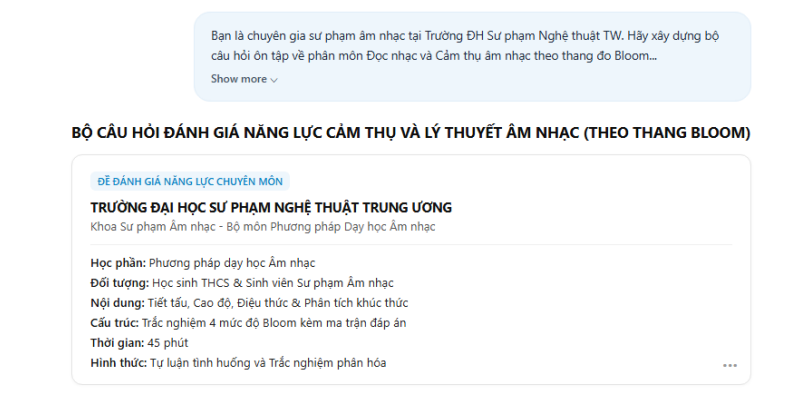

aMục tiêu bài tập
Yêu cầu
Viết Prompt cho tác vụ học tập, phân tích hạn chế của Prompt ban đầu, cải tiến Prompt và so sánh kết quả đầu ra từ AI.
Chủ đề mình chọn
Phương pháp dạy học cảm thụ âm nhạc và tiết tấu theo triết lý Orff-Schulwerk kết hợp công nghệ số. Ba tác vụ được chọn vì đều là việc sinh viên Sư phạm Âm nhạc thường làm: tóm tắt tài liệu chuyên ngành, giải thích khái niệm khó cho học sinh, và soạn câu hỏi kiểm tra.
| Tác vụ | Mục tiêu | Rủi ro khi dùng AI | Tiêu chí kiểm chứng |
|---|---|---|---|
| 1. Tóm tắt bài đọc về Orff-Schulwerk | Rút ra nguyên lý sư phạm, kỹ thuật Body Percussion, quy trình ứng tác | Tóm tắt sơ sài, bỏ sót điều kiện sư phạm, nhầm trường phái | Thuật ngữ đúng, đủ 4 giai đoạn phát triển năng lực |
| 2. Giải thích Đa âm (Polyphony) và Phức điệu đối vị (Counterpoint) | Biến khái niệm trừu tượng thành kiến thức dễ hiểu cho học sinh phổ thông | Giải thích khô khan hoặc đơn giản hóa làm sai bản chất | Có ẩn dụ trực quan, ví dụ đối chiếu |
| 3. Câu hỏi ôn tập theo thang Bloom | 4 mức: Nhận biết, Thông hiểu, Vận dụng, Vận dụng cao cho chủ đề Tiết tấu và Cảm thụ | Câu hỏi ghi nhớ vụn vặt, phương án nhiễu lộ liễu | Bám chuẩn đầu ra, phân hóa được năng lực |
Kỹ năng được rèn luyện
- Xác định rõ nhiệm vụ cần giao cho AI
- Cấu trúc Prompt: vai trò, bối cảnh, nhiệm vụ, định dạng, ràng buộc
- Kỹ thuật Role-prompting, chia bước (Chain-of-Thought), đưa mẫu (Few-shot)
- Đánh giá và kiểm chứng câu trả lời của AI bằng kiến thức chuyên môn
bTóm tắt quá trình thực hiện
Các bước thực hiện
- Chọn chủ đề và 3 tác vụ, xác định mục tiêu, rủi ro và tiêu chí kiểm chứng cho từng tác vụ (bảng ở mục a).
- Viết Prompt cơ bản (zero-shot, một câu ngắn) cho từng tác vụ và ghi nhận kết quả.
- Viết Prompt cải tiến: thêm người đọc, độ dài, số phần, định dạng đầu ra.
- Viết Prompt nâng cao: thêm vai trò chuyên gia, chia bước, ràng buộc học thuật, yêu cầu riêng cho từng câu.
- So sánh 9 kết quả theo độ rõ, độ chính xác chuyên môn, khả năng dùng trong dạy học; kiểm tra thuật ngữ bằng tài liệu chuyên ngành.
- Rút ra nguyên tắc viết Prompt cho sinh viên sư phạm.
Công cụ đã sử dụng
| Công cụ | Dùng để làm gì | Vì sao chọn |
|---|---|---|
| ChatGPT (GPT-4o) | Chạy 9 Prompt và nhận kết quả để so sánh | Dùng một mô hình cho cả 9 lần để so sánh công bằng giữa các cấp Prompt |
| Google Docs | Ghi Prompt, bảng so sánh, xuất PDF | Dễ chỉnh sửa, lưu trên đám mây |
Ghi nhận sử dụng AI
| Công cụ AI | Mục đích | AI hỗ trợ phần nào | Mình tự làm / kiểm chứng gì |
|---|---|---|---|
| ChatGPT (GPT-4o) | Đối tượng thử nghiệm của bài | Sinh câu trả lời cho 9 Prompt | Tự chọn tác vụ, tự viết cả 9 Prompt, tự chấm và so sánh kết quả, kiểm tra thuật ngữ âm nhạc (Orff-Schulwerk, đa âm, Bloom) với tài liệu chuyên ngành |
Khó khăn và cách giải quyết
| Khó khăn gặp phải | Cách giải quyết |
|---|---|
| Prompt cơ bản cho câu trả lời chung chung, giống định nghĩa từ điển, khó dùng với học sinh. | Nêu rõ người đọc (sinh viên năm nhất, học sinh THCS), số phần, độ dài và yêu cầu ví dụ. |
| Câu hỏi trắc nghiệm AI tạo ra chủ yếu ở mức ghi nhớ, phương án sai dễ nhận ra. | Giao mục tiêu riêng cho từng câu theo ma trận Bloom và yêu cầu giải thích vì sao loại từng phương án nhiễu. |
| AI có thể dùng sai thuật ngữ hoặc nhầm trường phái âm nhạc. | Thêm ràng buộc “chính xác thuật ngữ, không viết sáo rỗng” và tự kiểm tra cao độ, trường độ, hòa âm trước khi dùng. |
Bài học rút ra
Thêm bối cảnh, vai trò và quy định đầu ra giúp kết quả dễ đọc và dễ đối chiếu với mục tiêu hơn. Với nhiệm vụ phức tạp như soạn câu hỏi âm nhạc, chỉ rõ mục tiêu của từng câu giúp mình kiểm tra độ phân hóa trước khi đưa vào lớp. Dù Prompt tốt đến đâu, người giáo viên âm nhạc vẫn phải là người kiểm chứng cuối cùng.
cSản phẩm cuối cùng
Chín Prompt nguyên văn theo 3 cấp, kết quả đầu ra và bảng so sánh.
Tác vụ 1. Tóm tắt bài đọc về Orff-Schulwerk
Prompt ban đầu
Tóm tắt bài đọc về phương pháp Orff-Schulwerk trong giáo dục âm nhạc.
Hạn chế
Chỉ nêu định nghĩa chung, chưa tách các giai đoạn sư phạm của Orff-Schulwerk.
Prompt cải tiến
Tôi là sinh viên năm nhất ngành Sư phạm Âm nhạc. Hãy tóm tắt bài đọc về triết lý giáo dục âm nhạc Orff-Schulwerk trong khoảng 400 từ, chia làm 3 phần: Nguyên lý cốt lõi, Kỹ thuật vận động cơ thể (Body Percussion) và Ứng dụng trong dạy học tiểu học. Trình bày dưới dạng các gạch đầu dòng rõ ràng.
Điểm thay đổi
Thêm người đọc, giới hạn 400 từ và 3 phần bắt buộc. Kết quả có bố cục 3 phần, giải thích Body Percussion, nhưng liên hệ với dạy học tiểu học còn mờ.
Prompt nâng cao
Bạn là Giảng viên cao cấp chuyên ngành Phương pháp Dạy học Âm nhạc tại Trường ĐH Sư phạm Nghệ thuật TW. Hãy thực hiện tóm tắt học thuật chuyên sâu về tài liệu phương pháp Orff-Schulwerk kết hợp công nghệ số. + Bước 1: Phân tích bối cảnh triết lý và rút trích 4 luận điểm cốt lõi của Orff-Schulwerk. + Bước 2: Trình bày chi tiết quy trình 4 giai đoạn sư phạm (Bắt chước -> Khám phá -> Ứng tác -> Ký âm). + Bước 3: Chỉ rõ vai trò của phần mềm số (MuseScore, GarageBand) trong việc hỗ trợ học sinh ghi lại sản phẩm ứng tác. + Ràng buộc: Giữ văn phong học thuật chuẩn mực, giải thích chính xác thuật ngữ âm nhạc, không viết sáo rỗng, dung lượng khoảng 450 từ.
Kết quả: phân biệt rõ 4 giai đoạn bắt chước – khám phá – ứng tác – ký âm, nêu đúng vai trò của MuseScore trong ghi lại sản phẩm ký âm.
Tác vụ 2. Giải thích đa âm và phức điệu đối vị cho học sinh THCS
Prompt ban đầu
Giải thích khái niệm tính đa âm và phức điệu trong âm nhạc.
Hạn chế
Giống định nghĩa từ điển, nhiều thuật ngữ, học sinh phổ thông khó tiếp thu.
Prompt cải tiến
Hãy giải thích khái niệm tính đa âm (Polyphony) và phức điệu đối vị (Counterpoint) cho học sinh THCS dễ hiểu. Cung cấp định nghĩa đơn giản, 1 ví dụ thực tế trong bài hát quen thuộc và so sánh ngắn gọn với âm nhạc đơn âm (Monophony).
Điểm thay đổi
Xác định đối tượng THCS, yêu cầu một ví dụ quen thuộc và lấy đơn âm làm mốc so sánh. Kết quả dễ hiểu hơn nhưng ví dụ chưa thật trực quan.
Prompt nâng cao
Đóng vai một chuyên gia sư phạm âm nhạc và nhà nghiên cứu lý luận âm nhạc. Hãy giải thích cặn kẽ khái niệm Tính đa âm (Polyphony) và Phức điệu đối vị (Counterpoint) phục vụ thiết kế giáo án cho học sinh phổ thông. + 1. Bản chất: Định nghĩa khoa học về chuyển động độc lập giữa các bè giai điệu nhưng hòa hợp về công năng hòa âm tổng thể. + 2. Ẩn dụ: Sử dụng hình tượng ẩn dụ trực quan (ví dụ: cuộc đối thoại đa chiều giữa nhiều nhân vật có cá tính riêng nhưng cùng hòa quyện trong một câu chuyện kịch). + 3. So sánh: Lập bảng đối chiếu 3 dạng kết cấu: Đơn âm (Monophony) - Chủ âm (Homophony) - Phức điệu (Polyphony) kèm ví dụ tác phẩm kinh điển và ca khúc thiếu nhi quen thuộc. + Ràng buộc: Ngôn ngữ sư phạm truyền cảm, chuẩn xác thuật ngữ âm nhạc, có câu hỏi tương tác để học sinh tự cảm nhận.
Kết quả: dùng ẩn dụ “cuộc đối thoại nhiều giọng”, có bảng đối chiếu đơn âm – chủ âm – phức điệu mạch lạc.
Tác vụ 3. Câu hỏi ôn tập theo thang Bloom
Prompt ban đầu
Tạo 5 câu hỏi ôn tập môn Âm nhạc lớp 7 về tiết tấu và cao độ.
Hạn chế
Câu hỏi chỉ ở mức ghi nhớ, phương án sai quá hiển nhiên, không phân hóa được học sinh.
Prompt cải tiến
Tạo bộ 4 câu hỏi trắc nghiệm 4 lựa chọn (A, B, C, D) ôn tập môn Âm nhạc lớp 7 về phân môn Đọc nhạc và Tiết tấu. Kèm đáp án đúng và lời giải thích ngắn gọn cho từng câu.
Điểm thay đổi
Quy định số câu, 4 lựa chọn, đáp án và lời giải. Kết quả bao quát kiến thức nhưng chưa tách rõ các mức tư duy.
Prompt nâng cao
Bạn là Chuyên gia Khảo thí và Phương pháp Dạy học Âm nhạc tại Trường ĐH Sư phạm Nghệ thuật TW. Hãy thiết kế bộ 4 câu hỏi kiểm tra đánh giá theo 4 cấp độ nhận thức của thang Bloom cho chủ đề Tiết tấu và Cảm thụ âm nhạc. + Câu 1 (Nhận biết): Nhận diện các hình nốt và giá trị trường độ trong ô nhịp 2/4, 4/4. + Câu 2 (Thông hiểu): Phân tích cảm xúc và tính chất âm nhạc tạo ra bởi tiết tấu đảo phách và nghịch phách. + Câu 3 (Vận dụng): Phân tích đoạn trích bản nhạc và lựa chọn mẫu tiết tấu gõ đệm cơ thể (Body Percussion) phù hợp. + Câu 4 (Vận dụng cao): Tình huống sư phạm - Đề xuất phương án khắc phục cho học sinh bị lệch nhịp khi hát bè đuổi (Canon). + Yêu cầu đầu ra: Trình bày rõ ràng câu hỏi, 4 phương án lựa chọn, chỉ rõ đáp án đúng và phân tích lý do chọn/bác bỏ phương án nhiễu.
Kết quả: câu hỏi phân bố đủ 4 mức từ nhận biết đến vận dụng cao, phương án nhiễu có tính phân hóa, có tình huống học sinh lệch nhịp khi hát bè đuổi.


Các thành phần của Prompt nâng cao
| Thành phần | Nội dung trong Prompt của mình |
|---|---|
| Vai trò | Giảng viên Phương pháp Dạy học Âm nhạc / chuyên gia sư phạm âm nhạc / chuyên gia khảo thí |
| Bối cảnh | Tài liệu Orff-Schulwerk kết hợp công nghệ số; giáo án cho học sinh phổ thông; Âm nhạc lớp 7 |
| Nhiệm vụ (chia bước) | Bước 1–2–3 hoặc Câu 1–4 với mục tiêu riêng theo mức Bloom |
| Định dạng đầu ra | Khoảng 450 từ; bảng đối chiếu 3 dạng kết cấu; 4 phương án, đáp án và lý do loại phương án nhiễu |
| Ràng buộc | Văn phong học thuật, thuật ngữ chính xác, không sáo rỗng, có câu hỏi tương tác |
So sánh kết quả
| Tác vụ | Prompt cơ bản | Prompt cải tiến | Prompt nâng cao |
|---|---|---|---|
| 1. Tóm tắt bài đọc | Nội dung chung chung, định nghĩa sơ sài, không phân định giai đoạn sư phạm | Bố cục 3 phần rõ, nêu được Body Percussion; liên hệ dạy học còn mờ | Làm rõ 4 giai đoạn, nêu đúng vai trò MuseScore trong ký âm |
| 2. Giải thích khái niệm | Khô khan, nhiều thuật ngữ khó hiểu | Có ví dụ và so sánh với đơn âm; ví dụ chưa trực quan | Ẩn dụ “cuộc đối thoại đa giọng”, bảng đối chiếu 3 kết cấu mạch lạc |
| 3. Câu hỏi Bloom | Chỉ ở mức nhớ, phương án sai hiển nhiên | Có đáp án, giải thích; chưa tách cấp độ tư duy | Đủ 4 bậc Bloom, phương án nhiễu tốt, có tình huống sư phạm |
Vì sao Prompt cải tiến hiệu quả hơn
- Vai trò và bối cảnh định hướng độ khó, thuật ngữ và cách diễn đạt phù hợp người đọc.
- Chia nhiệm vụ thành bước giúp dễ kiểm tra phần nào đã được trả lời; ma trận Bloom làm rõ kỹ năng cần đo ở từng câu.
- Yêu cầu đầu ra cụ thể (số phần, độ dài, đáp án, lý do loại phương án sai) giúp đối chiếu kết quả với mục tiêu.
Nguyên tắc rút ra
- C–T–R–F: nêu Bối cảnh (Context), Nhiệm vụ (Task), Vai trò (Role), Định dạng (Format).
- Đưa mẫu khi cần (few-shot): 1–2 ví dụ câu hỏi hoặc lời giải mong muốn.
- Thẩm định bằng chuyên môn: tự kiểm tra cao độ, trường độ, hòa âm và độ phù hợp với học sinh.
- Tinh chỉnh theo phản hồi: yêu cầu AI sửa phần thiếu ví dụ hoặc chưa đúng mức Bloom.
Tài liệu tham khảo
- Bộ Giáo dục và Đào tạo (2018), Chương trình Giáo dục phổ thông môn Âm nhạc (Ban hành kèm Thông tư 32/2018/TT-BGDĐT), Hà Nội.
- Đào Ngọc Dung (2016), Phân tích tác phẩm âm nhạc và phương pháp tiếp cận trong sư phạm nghệ thuật, NXB Âm nhạc, Hà Nội.
- Lê Anh Tuấn (2019), Phương pháp dạy học Âm nhạc ở trường phổ thông theo định hướng phát triển năng lực học sinh, NXB Đại học Sư phạm, Hà Nội.
- Trần Thị Thu Hà (2023), ‘Đổi mới phương pháp dạy học âm nhạc ở trường phổ thông đáp ứng yêu cầu Chương trình Giáo dục phổ thông 2018’, Tạp chí Giáo dục Nghệ thuật, (35), tr. 28–34.
- Bauer, W. I. (2020), ‘Music learning and technology’, International Journal of Music Education, 38(4), pp. 589–602.
- Webster, P. R. (2016), ‘Creative thinking in music: Advancing a model for education and technology’, in The Oxford Handbook of Music Education, Volume 2, Oxford University Press, pp. 245–261.
Báo cáo bài tập
Bản PDF xuất từ Google Docs, gồm chín Prompt, bảng so sánh kết quả và tài liệu tham khảo.